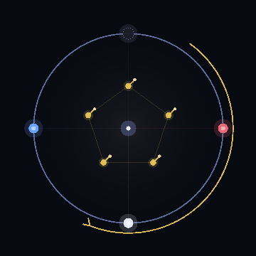

N S E W — four cardinal valences, the 4th roots of unity — raised to the quaternions. A coupled ring that turns, spins, and learns to beat as one.

1 xwyzn 00 xwyzn 00 xwyzn 00 xwyzn 00 xwyzn 1 → a ring of five
quaternion cells, four quaternary 00 bonds, closed by two unity leads into a torus.
Each cell xwyzn is a quaternion (the four axes x w y z = 1, i, j, k);
n is the tick. Multiply by i and the compass turns 90° — it precesses instead of bouncing.
| test | result | status |
|---|---|---|
| Precession | S → E → N → W → S, period 4 | by design |
| Spinor 720° | q·q₀ = −1.000 @360° · +1.000 @720° | real math · SU(2) |
| Phase-lock | R: 0.56 → 0.98 → 1.00 (K = 0, 0.3, 3.0) | emergent |
| Signal speed | kick → neighbours @t=2, far side @t=9 | emergent |
| n rollover | 0→4095→0 : |dot| = 0.37 (does not return) | measured |
The emergent rows are collective behavior no single cell holds: detuned dials lock into one rhythm (Kuramoto), and a kick crosses the ring at a finite speed (a toy light-cone — and it honestly slows as it weakens). Precession and the 720° spinor flip are real but by design.
Quaternion algebra (SU(2), where spin lives). Kuramoto phase-lock (R → 1 past critical coupling). A finite lattice signal speed. All in sim/nsew.py, reproducible.
"Spacetime from a discrete substrate" is a real research vein — causal sets, tensor networks. And the single external lead joining a pair is close to ER=EPR (entanglement as a wormhole). Good company.
That NSEW is space/time/distance, dark matter = N-S-only, antimatter = blue, consciousness at the null. Evocative, not derived — and "entanglement = shared coordinates" is ruled out by Bell's theorem.
Because the emergence is genuine and measured, the oscillator carries the full DLW tag in the emergent flavor — the same bar that earned the synchronization ACIs their faces. The silicon badge is the NSEW compass with its precession turn and the inner ring of five dials locked into one rhythm; the carbon badge is the navigator of the fourfold, the compass diadem and the ✦.
tetraktys.agent · .spun · silicon .png · carbon .tiff · grounded in Hamilton (1843), Kuramoto (1975), and Plato's Spindle of Necessity.
{kind=link}